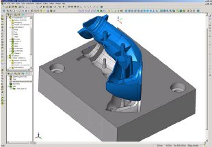
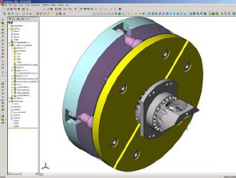
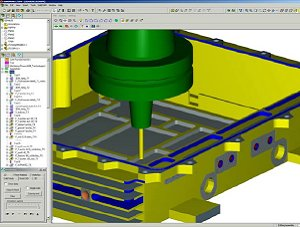
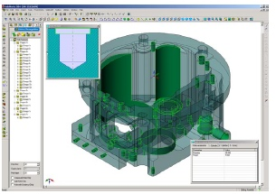
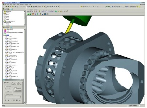
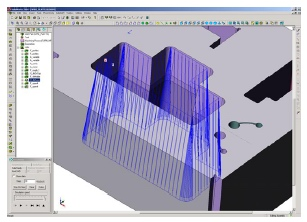

|
2.
Üretim Modelleme
Tüm
ürün modelleme iþlemleri tamamen SolidWorks'te yapýlmaktadýr.
SolidWorks yaklaþýk 10 yýldýr piyasada olan ticari bir üründür.
SolidWorks, önemli fonksiyonlara sahip orta ölçekli bir katý
modelleme programý olmasýna raðmen, Dassault, UGS ve PTC gibi
firmalarýnýn geliþtirdikleri üst seviye modelleme yazýlýmlarýna
göre çok daha ucuz olarak piyasada bulunmaktadýr. SolidWorks,
Dassault firmasýnýn bir ürünü olmasýna raðmen aslýnda baðýmsýz
olarak sayýlmaktadýr. Dassault, CATIA'yý büyük ölçekli þirketler
için proses esaslý, geniþ tabanlý bir PLM çözümü olarak sunmaktadýr.
Sonuçta, SolidWorks piyasaya CAD esaslý bir ürün olarak sunulmuþtur.
SolidWorks, bir þirket olarak ta bir ürün olarak da kesinlikle
mükemmel ve dünyadaki orta ölçekli modelleme programlarý açýsýndan
bir standart olmuþ durumda.
SolidWorks,
Parasolid geometri tabanýnda geliþtirilmiþ bir program. Extrude,
döndürerek süpürme, kalýnlýk verme, kabuk boþaltma, loft,
kopyalama, çoðaltma ve delik delme gibi unsur tabanlý parça
modelleme tekniklerini kullanarak parçalarýnýzý modelleyebiliyorsunuz.
Deðiþiklikler ise sürükleyip býrakarak kolayca yapýlabiliyor.
SolidWorks
ile telkafes çizimler, yüzeyler veya katý modeller üzerinde
çalýþabiliyorsunuz ve bunlarýn herhangi biri üzerinde NC programlama
yapabiliyorsunuz. Kullanýcý isterse telkeafes çizimleri veya
yüzeyleri katý hale dönüþtürebiliyor yada isterse dosyalarýn
orijinal halleri üzerinde çalýþabiliyor. Katý modeller, yüzeylere
derinlik vererek te yapýlabiliyor. Eðer bir katýnýn herhangi
bir yüzünü silerseniz, katý tamamen bir yüzeye dönüþüyor.
Kullanýcý ister katý ister yüzey model üzerinde çalýþabiliyor
yada ikisini ayný ortamda da kullanabiliyor. Modelin yüzey
yada katý olmasýndan baðýmsýz olarak tüm modelleme araçlarýný
kullanabiliyorsunuz. Boolean operasyonu gibi katýlama operasyonlarý
katýya da yüzeye de, hem montaj hem de parça ortamýnda eklenebiliyor.
Yüzey operasyonlarý, katýlara da eklenebiliyor. Yüzeyler ve
katýlar iç içe karýþýk olarak kullanýlabiliyor. Yüzeyler sýfýr
kalýnlýða sahip bir katý gibi davranýyor. Yüzeyler üzerinde
eðrilik kontrolleri yapýlabiliyor.
|  |
|
Figür
4 - SolidWorks'te kalýp tasarýmý |
SolidWorks'ün
asýl kuvvetli olduðu yer ise tabi ki katý modelleme. Yüzey
modellemede, kalýp modelleri gibi kompleks yüzeyler söz konusu
ise, katýya oranla daha az modelleme yeteneði bulunuyor. Kompleks
bir kalýpta yada otomotivde kullanýlan kalýplardaki gibi binlerce
yüzey içeren dosyalarda SolidWorks'ün yazýlýmdan gelen bazý
sýnýrlamalarý bulunmakta. Kalýp araçlarý program içinde mevcut
fakat kalýp piyasasý SolidWorks'ün odak noktalarýndan biri
deðil. Sonuçta, PLM tedarikçileri ve CAM esaslý markalarýn
sunduklarý modelleyiciler, üst seviyedeki kalýp pazarlarý
için daha elveriþli.
Diðer
sistemlerden CAD modelleri import etmekten bahsetmek gerekirse
SolidWorks, Unigraphics, CATIA, Pro/E, ACIS ve Parasolid tabanlý
sistemler için çeviriciler saðlýyor. STEP, IGES ve VDAFS gibi
standart çevirme formatlarýný da destekliyor. SolidWorks ile
parça geometrisini birkaç yöntem kullanarak tek baþýna çalýþan
CAM sistemlerine aktarabilirsiniz, fakat sadece parça geometrisi
transfer olur. Bununla birlikte eðer SolidCAM kullanýyorsanýz,
bir altýn ortak olduðu için, sadece parça geometrisi deðil
unsur tanýmlamalarý, ölçü toleranslarý, GD&T, yüzey finiþ
sembolleri, çizim bileþenleri, notlar ve ürün tanýmýnda kullanýlan
diðer elemanlara eriþebilirsiniz.
|  |
|
Figür
5 - SolidWorks'te pozisyonlamalý iþleme için parametrik
modelleme |
SolidWorks
montaj ortamýnda modellemeyi desteklediðinden birçok parçadan
oluþan büyük montajlar oluþturulabilir. Parçalar arasýndaki
iliþkiler her zaman korunur. Standart civatalarýn, pullarýn,
somunlarýn seçimi ve montaja çaðrýlmasý otomatik olarak yapýlýr.
Hareket simülasyonu ve katýlar arasýnda çarpýþma ve iç içe
geçme testleri de mevcuttur. SolidWorks çok kapsamlý bir teknik
resim kabiliyetine sahiptir. 2B çizimler, çoklu görüntüler,
ölçüler ve notlar içerecek þekilde direk 3B katý kullanýlarak
oluþturulabilir. Malzeme listesi otomatik olarak çýkartýlýr.
Tüm bileþenlere otomatik olarak balon yerleþtirilebilir. Bir
teknik resmin deðiþik versiyonlarý karþýlaþtýrýlabilir. Model
ile teknik resim arasýndaki iliþki her zaman saðlanýr. Yani,
eðer model üzerinde bir ölçü deðiþir ise, teknik resimdeki
görüntüler ve malzeme listesi otomatik olarak güncellenir.
3.
Temel Ýþleme Operasyonlarý
SolidCAM
iþleme gücünün nedeni, her ne kadar önemli derecede ürünün
geniþliði, derinliði ve esnekliði olsa da diðerlerine kýyasla
öðrenmesi ve kullanmasý kolay olmasýndan gelir. SolidCAM 2,5
eksen frezede delik açma, profil iþleme ve cep boþaltma iþlemlerini
yapabilirsiniz. Delik döngülerini kullanabilirsiniz.
SolidCAM'de
iþleme operasyonlarý katý ve yüzey modeller üzerinde yapýlýr.
Bu teknik, iþleme performansýný arttýrmak ve takýmýn malzemeye
dalmasýný minimize etmek için çoðu zaman baþvurulan bir yoldur.
SolidWorks modeli ve SolidCAM ile çýkarýlan takým yollarý
arasýnda her zaman baðlantý vardýr. Örneðin, eðer bir model
deðiþir ise takýmyolu da otomatik olarak güncellenir.
Ýþleme
için stok modeller 2D sýnýrlardan, 3D modellerden belirlenebilir
ya da stok model otomatik olarak hedef modelden belirlenebilir.
Bir Alman kullanýcýnýn gözlemlerine göre; "SolidCAM'in
diðer sistemlere göre en büyük avantajý 2D, 2.5D ve 3D çalýþmalarý
beraber ayný anda kullanabilmenizdir".
SolidCAM'de
malzemeye ister doðrusal olarak ister helisel olarak giriþ
yapabilirsiniz. Helisel giriþ yaptýðýnýzda bir sorun ile karþýlaþýlýr
ise sorun ortadan kalkýncaya kadar helisin yarýçapý otomatik
olarak sürekli düþürülür. Ya da uç noktada, helisel dalma
sorunu önlemek için doðrusal giriþe dönüþür. SolidCAM'de deðiþik
yüzeyleri iþlemek için sadece bir model gerekir. Bazý yazýlým
sistemlerinde her yüzey için ayrý modellere ihtiyaç duyulmaktadýr.
SolidCAM takým kütüphanesinde kesici takýmlarý, tutucularý
ve takým montajlarýný bulabilirsiniz. Takým kütüphanesinde
takýmlarýn ve takým tutucularýn grafiksel görünümleri mevcuttur.
SolidCAM, tavsiye edilen hýzýn, ilerlemenin ve kesim derinliðinin
otomatik hesaplarýnýn müþteri tarafýndan kendilerine göre
yapýlmasýna olanak verir. Takýmlar takým kütüphanesinden alýnabilir
veya etkileþimli olarak belirtilebilirler.
|  |
|
Figür
6 - Prizmatik bir parçanýn 2.5 eksen iþlenmesi |
SolidCAM
verimli bir þekilde parçanýn koordinat sitemini belirler.
Yazýlým isteðe baðlý seçilebilecek sýfýr noktalarýný belirler
ve kullanýcý kendi iþine en uygun olaný seçer. Ýstenildiði
zaman sýfýr noktasýna baðlý parametreler deðiþtirilebilir
ve sýfýr noktasý oynatýlabilir. SolidCAM hem parça hem de
montaj ortamýný destekler. Montaj ortamýnda iken parça ortamýndaki
gibi baðlama aparatlarýný görebilirsiniz. Birçok SolidWorks
parçasý, yalnýz bir CAM parçasý olarak iþlenebilirler.
SolidCAM'in
bir önemli özelliði ise kütüphane-tabanlý iþleme yapýlabilmesidir.
Standart iþleme sýrasýnda çeþitli fonksiyonlarý tanýmlayabilirsiniz.
SolidCAM deðiþtirilebilir, saklanabilir ve tekrar kullanýlabilir
iþleme teknolojisi veritabanýna sahiptir. Böylece programlama
otomatikleþir, zaman kazanýlýr ve programlama tutarlýlýðý
saðlanýr. Bazý standart þablonlar programla beraber gelir
ve diðerleri kullanýcýlar tarafýndan oluþturulabilir. Þablonlar
nerdeyse bütün iþlemler için kullanýlabilir bunlardan bazýlarý;
delikli cep iþleme, diþ çekme, kenar finiþ iþlemi ve kalan
talaþ iþleme. Ayný zamanda bazý kurallar teknoloji veritabanýnda
oluþturulabilir.
SolidCAM
iþlemleri tamamen parametrik tabanlýdýr. Aþaðý adým, yanal
adým, yüzey ofseti gibi iþlem parametreleri iþleme stratejileri
olarak nitelendirilir. Parametreler ve iþlemler kullanýcýlarýn
ihtiyaçlarý doðrultusunda deðiþtirilebilirler. Mesela aþaðý
adýmlarýn deðeri deðiþtirilebilir. Bir iþlem yapýldýktan sonra
þablonu iþlem tablosuna kaydedilebilir.
SolidCAM'de
tek tuþla bütün diþiyi iþleyebilirsiniz. Prizmatik parçalarda
SolidCAM modeli analiz eder ve otomatik olarak sabit Z stratejisi
ile iþlenecek olan havuzlarý ve profilleri algýlar. Cepler
ayrý ayrý veya tümü ayný anda kesilebilir. Dairesel, kontür,
zigzag ve tek yönlü kesim mevcuttur. Ýstenen sýrada havuz
boþaltma, sýnýrsýz sayýda ada, ada temizleme opsiyonu, yüksek
hýzda havuz boþaltma, kontur cep boþaltma ve açýk veya kapalý
havuzlar desteklenmektedir.
|  |
|
Figür
7 - Delik unsurlarýnýn otomatik tanýnmasý ve iþlenmesi |
SolidCAM'de
delik açma iþlemini otomatikleþtirmek için unsur tabanlý iþleme
kullanýlmaktadýr. SolidCAM içinde geliþtirilen otomatik unsur
tanýmayý kullanarak yazýlým SolidWorks modellerini analiz
edebilir ve katý modelde otomatik olarak delik unsurunu tanýr.
Unsur tanýma, unsur tabanlý iþlemede ve programlama otomasyonunda
önemli olabilir. SolidCAM bütün delik çeþitlerini algýlar
ve tanýmlar; bunlara kör delikler, imbus civata deliði ve
vida deliði dahildir. SolidCAM, veritabanýna kaydettiðiniz
iþ tanýmlamalarý sayesinde unsurlarýn takým yollarýný otomatik
olarak çýkartýr. Ýþlem otomatik olarak geliþir ama kullanýcý
bu iþleme müdahale edebilir.
Enjektör
pimleri delikleri ve benzeri delikleri olan kalýplarýn iþlemesini
yaparken SolidCAM delik unsurlarýný kapama özelliðine sahiptir
veya deliklerin üzerinde yüzey oluþturur. Bu sayede parça
yüzeyinde, takým deliðe girmeden iþleme yapýlabilir. SolidCAM'de
delik çevrimleri seviyelerine göre ayrýlýrlar; böylece vida
deliði oluþturmak için kullanýlan tüm operasyonlar ayný alt
programý kullanýrlar ve G kodu satýrlarýnýn sayýsý azaltýlmýþ
olur. Ayný alt programý kullanan operasyonlar farklý seviyelerde
olabileceðinden, alt program Z seviyelerini içermez.
Hacim
ve kaba frezelemede, iþleme stratejisini otomatik seçebilirsiniz.
SolidCAM kullanýcýlarý genelde ilk önce kademe kademe kaba
atýp sonra finiþ için bir zig-zag yada tek yönlü kesme yaparlar.
Yazýlým düz alanlarý tanýr ve diðer alanlarda malzeme kalýrken
bu alanlara finiþ uygulanabilir. Modelde dýþa açýlýþ olduðunda
takým dýþardan girer ve dalma yapmaz. Buna raðmen, kullanýcý
isterse malzemeye ortadan giriþ yapýp ve dýþarý hareket edebilir.
Tek komutla kaba alma ve arta kalan malzeme için tekrar kaba
alma yapabilirsiniz. Program kendi içinde hazýrladýðý model
ile karþýlaþtýrma yaparak nerelerde malzeme kaldýðýný belirleyebilir.
|  |
|
Figür
8 - Elektronik bir parçanýn 3+2 pozisyonlamalý iþlenmesi |
Arta
kalan malzemeyi iþleme kaba sýrasýnda uygulanýr ve kesme iþlemi
sadece belirtilen bölgede malzeme kaldýysa yapýlýr. 2 eksen
operasyonlarda SolidCAM orijinal stok, hedef model, takým,
takým yollarý bilgilerini bilerek nerede ne miktarda talaþ
kaldýðýný hesaplayabilir. Her tamamlanan iþlemeden sonra talaþ
bilgileri otomatik olarak yenilenir. Kalan malzeme hesaplarý
2.5 eksen, 3 eksen, ve 3+2 pozisyonlamalý iþlemede mevcuttur.
5 eksen iþlemede de kalan malzeme hesaplarý mevcuttur.
Kaba
yaparken derin malzeme ile karþýlaþýlýrsa trochoidal kesim
diðer kesim stratejileri ile birlikte kullanýlabilir. Bu strateji
nispeten yeni ve geliþmiþ bir iþleme stratejisidir. Bu malzemenin
içinde ve dýþýnda takýmýn dairesel kesme hareketi yapmasý
ile olur.
SolidCAM
gagalama yöntemi ile kaba yapmaya da destek verir. Bu da önceden
yapýlan ve pek kullanýlmayan kaba alma yöntemidir ama büyük
ve yumuþak malzeme için uygun olabilecek bir yöntemdir. SolidCAM
ile kaba, kolon halinde veya adým adým yapýlabilir. Sýradan
bir kaba alma stratejisini mesela spiral kesim stratejisini
gagalamaya çevirebilirsiniz ve operasyon gagalama ile kaba
alma stratejisi ile tamamlanabilir.
|  |
|
Figür
9 - Tel erozyon ile 4 eksen iþleme |
Yeni
kullanýcýlar için, diyalog kutularýndaki iþleme stratejisinin
veya operasyonlarýn grafiksel anlatýmý ilgi çekicidir. SolidCAM
yardým fonksiyonlarýnda da grafikler mevcuttur ancak parametre
diyalog kutularýnda yoktur. SolidCAM'de hesaplama yapýlýrken
diðer fonksiyonlarý kullanamazsýnýz.
SolidCAM
özellikle yatay 4 eksen iþlemede güçlüdür ve CIMdata'ya göre
bu tip iþlemede sanayi lideri olabilir. Bu yöntem, seri imalatta
çok önemli bir fonksiyon olabilir. Sýfýr noktasý otomatik
olarak belirlenir. Küp þeklindeki tabla kullanýlarak ayný
parçanýn kopyalarý kolaylýkla iþlenebilir.
SolidCAM'de
2 eksen ve 4 eksen tel erozyon desteði de saðlanmýþtýr. SolidCAM
Tel Erozyon Modülü, 4 eksen kontürde olduðu gibi, profilleri
ve eðik yüzeyleri sabit veya deðiþken açýlarda ele alabilir.
Otomatik cep açma iþleminde malzeme parçalarýnýn düþmesini,
akýllý algoritmalar sayesinde engeller. SolidCAM kullanýcýlara,
profil ve eðik yüzeylerde tel kesme yaparken bitiþ noktasýnýn
tamamen kontrolünü saðlar.
|